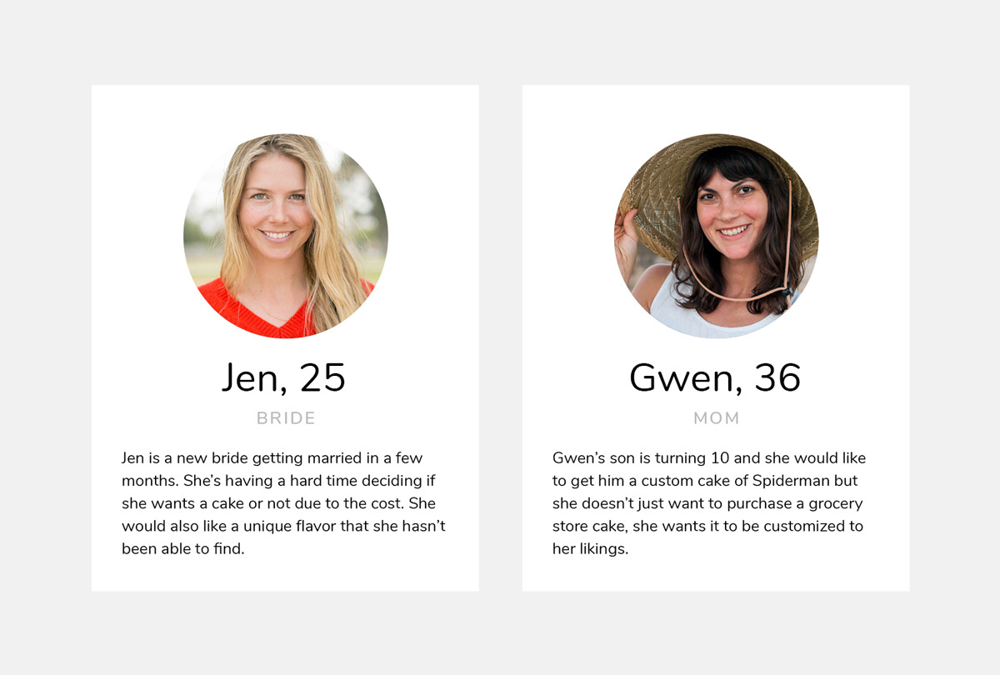
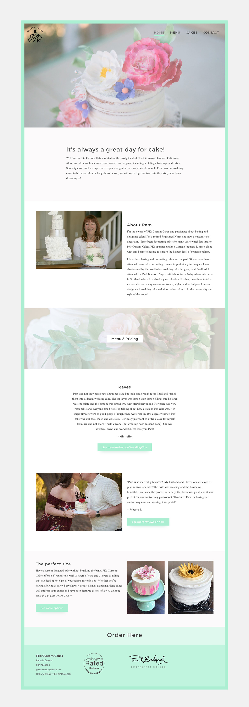

PKs Custom Cake was founded by a retired nurse who has a passion for baking and decorating cakes. She had a homemade website that she set up herself to simply show photos and prices but she wanted to attract more couples getting married that needed wedding cakes.
It was important to create personas to determine the main users and target audience of the site since anyone can buy a custom cake. Through previous sales, I determined the best two audiences would be brides and moms wanting cakes for their children’s birthday.
I designed a site around our two personas using a mint green border to add a bit of color aside from the cakes. The site features galleries of wedding cakes, children's cakes, and all occasion cakes. It also displays all of PKs Custom Cakes pricing and flavors.
